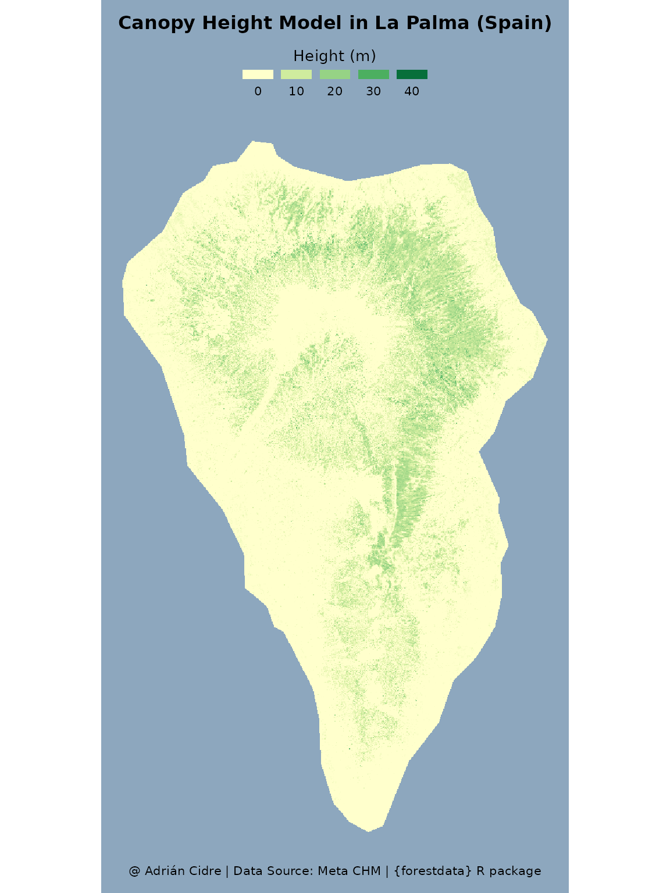

Canopy Height Models
canopy-height.RmdIntroduction
This page shows how to download Canopy Height Models using the
forestdata R package. First, we will load some packages to
get the data and create a map:
library(forestdata)
library(giscoR)
library(ggplot2)
library(sf)
#> Linking to GEOS 3.10.2, GDAL 3.4.1, PROJ 8.2.1; sf_use_s2() is TRUE
library(terra)
#> terra 1.7.83
library(tidyterra)
#>
#> Attaching package: 'tidyterra'
#> The following object is masked from 'package:stats':
#>
#> filterThe function that we will use to retrieve the data is
fd_canopy_height(), and it has several useful arguments.
First, we can either specify a polygon (sf or
SpatVector object) in the x argument, or
specify a longitude and latitude (lon and lat)
values for retrieving a tile.
Next, we have the argument model, which can be set
to:
model = "eth": to use the ETH Global Sentinel-2 10m canopy height from 2020 (more information).model = "meta": to use the very high resolution canopy height maps (1m) of Meta (more information).
The argument layer only applies to the eth
model. We can retrieve the canopy height model
(layer = "chm"), the standard deviation
(layer = "std") or both layers
(layer = "all").
Meta models
The Global Canopy Height Maps dataset provides a detailed view of tree canopy heights worldwide from 2009 to 2020, focusing on data from 2018 to 2020, which accounts for 80% of the information. Developed by Meta and the World Resources Institute, it serves as a critical reference for monitoring forest structure and assessing carbon stocks, supporting carbon credit schemes. Utilizing advanced satellite imagery and AI models like DiNOv2, it achieves a high precision with a mean absolute error of 2.8 meters, enabling accurate detection of changes in canopy height over time and improving carbon monitoring efforts.
We will create a map of the canopy height using one tile from La Palma Island (Canary Islands, Spain). To do so, we will download the Island boundaries using the giscoR package:
## Download La Palma
palma_sf <- gisco_get_nuts(
country = "Spain",
nuts_level = 3,
resolution = "03"
) |>
filter(NAME_LATN == "La Palma")
## Print
print(palma_sf)
#> Simple feature collection with 1 feature and 9 fields
#> Geometry type: MULTIPOLYGON
#> Dimension: XY
#> Bounding box: xmin: -18.00654 ymin: 28.45449 xmax: -17.72471 ymax: 28.85645
#> Geodetic CRS: WGS 84
#> LEVL_CODE NUTS_ID URBN_TYPE CNTR_CODE NAME_LATN NUTS_NAME MOUNT_TYPE
#> 1 3 ES707 2 ES La Palma La Palma 3
#> COAST_TYPE geo geometry
#> 1 1 ES707 MULTIPOLYGON (((-18.00532 2...Once we have downloaded the study area, we can proceed to download
the canopy height model of Meta. We can use the crop and
mask arguments to extract only the area of the island:
## Download the data
palma_meta_sr <- fd_canopy_height(
x = palma_sf,
model = "meta",
crop = TRUE,
mask = TRUE
)
#> 1 tile(s) were found.
#> Downloading tile 1...
#> |---------|---------|---------|---------|========================================= |---------|---------|---------|---------|=========================================
#> Cite this dataset using <https://doi.org/10.1016/j.rse.2023.113888>
## Print raster
print(palma_meta_sr)
#> class : SpatRaster
#> dimensions : 42695, 26268, 1 (nrow, ncol, nlyr)
#> resolution : 1.194329, 1.194329 (x, y)
#> extent : -2004479, -1973106, 3306396, 3357388 (xmin, xmax, ymin, ymax)
#> coord. ref. : WGS 84 / Pseudo-Mercator (EPSG:3857)
#> source : spat_1dd73f17555b_7639_80Q6udnsxVen2Mq.tif
#> varname : 033120312
#> name : canopy_height
#> min value : 0
#> max value : 64The tiles are stored in a AWS
Bucket, which is internally accessed using the aws.s3 R
package. Therefore, you will probably need to install this package if
you want to use this function, since it’s not imported by
forestdata:
pak::pak("aws.s3")We can now explore the height’s distribution in La Palma:
hist(palma_meta_sr, main = "Distribution of heights", xlab = "Height (m)")
#> Warning: [hist] a sample of 0% of the cells was used (of which 42% was NA)Once we have the data, we can generate one map of the canopy height
model leveraging the tidyterra package:
ggplot() +
geom_spatraster(data = palma_meta_sr) +
scale_fill_whitebox_c(
name = "Height (m)",
palette = "gn_yl",
direction = -1
) +
guides(
fill = guide_legend(
position = "top",
direction = "horizontal",
title.position = "top",
title.hjust = .5,
label.position = "bottom",
label.hjust = .5
)
) +
labs(
title = "Canopy Height Model in La Palma (Spain)",
caption = "@ Adrián Cidre | Data Source: Meta CHM | {forestdata} R package"
) +
theme_void(
base_size = 12
) +
theme(
panel.background = element_rect(fill = "#8DA7BE", colour = NA),
plot.background = element_rect(fill = "#8DA7BE", colour = NA),
plot.title = element_text(
face = "bold",
hjust = .5,
margin = margin(t = 10, b = 10)
),
plot.caption = element_text(hjust = .5, margin = margin(b = 10)),
legend.key.height = unit(2, "mm"),
legend.key.width = unit(7, "mm")
)
#> <SpatRaster> resampled to 500610 cells.